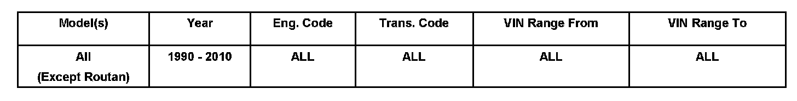
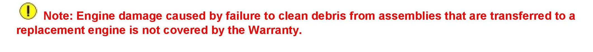

Engine - Component Inspection During Engine Replacement
10 08 01Aug. 21, 2008
2005558 supersedes Technical Bulletin Group 10 number 07-01 dated Feb. 20, 2007 due to removal of Routan applicability.

Vehicle Information
Condition
Engine Replacement, Checking for Debris Lodged in Transferred Assemblies
Technical Background
Replacement engine damage may be caused by debris from the damaged engine lodged in assemblies that are transferred from the damaged engine to the replacement engine.
If the original engine fails and pieces of metal (debris) are distributed throughout the engine, some debris may end up in the intake manifold and become lodged there.
Production Solution
Information only.
Service
During engine replacement, when parts must be transferred from a damaged engine to a replacement engine:
^ Always inspect those parts (including intake manifolds, turbochargers, hoses, fittings etc.) for contamination or debris from the damaged engine.
This is especially important in V6 or VR6 engines with variable intake manifolds, where debris can become lodged in the inner parts of the manifold until the manifold changes length.

Here, the debris may loosen and travel into the replacement engine and may cause damage to the replacement engine.
Warranty
Information only.
Required Parts and Tools
No special parts required.
No special tools required.
Additional Information
All part and service references provided in this Technical Bulletin are subject to change and/or removal.
Always check with your Parts Dept. and Repair Manuals for the latest information.